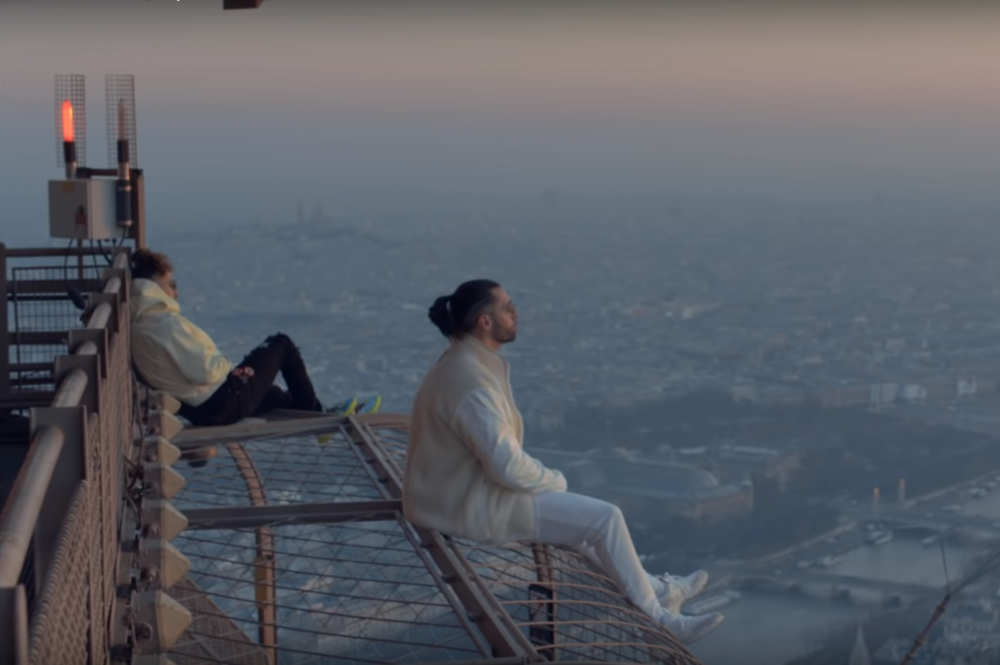
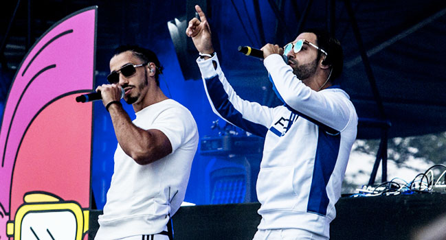
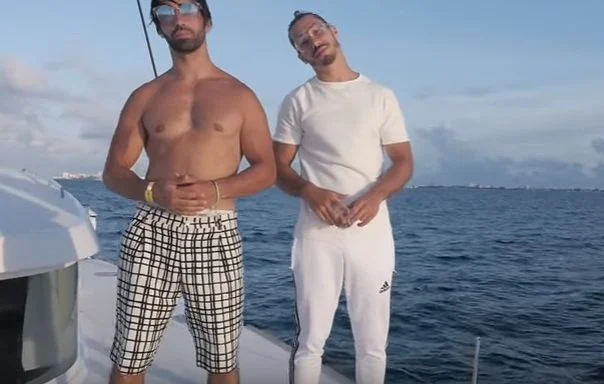
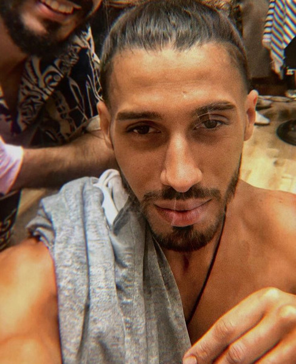
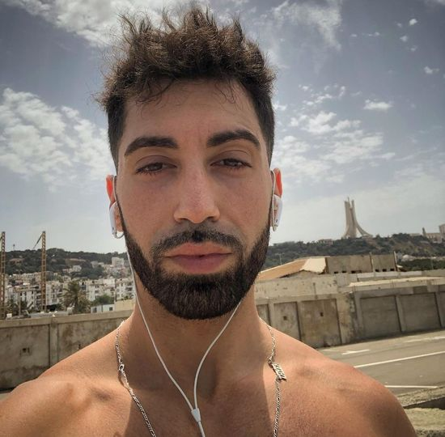

PNL en la Torre Eiffel

PNL en el concierto

PNL en el medio del mar
Components del grup
- Ademo: Tarik Andrieu

- N.O.S: Nabil Andrieu

Instruments
Veus
Caixa de ritmes
Teclat
Guitarra
Àlbums
| Any |
Àlbum |
Número de cançons |
| 2015 |
Que la famille |
12 |
| 2015 |
Le Monde Chico |
17 |
| 2016 |
Dans la légende |
18 |
| 2019 |
Deux frères |
22 |
Vídeos de YouTube
Mapa de la població d'on és el grup